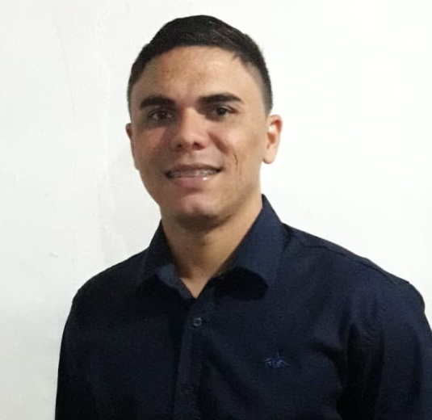

Sou Marcos André Azevedo de Assis, bacharel em Ciência da Computação pela Universidade do Estado do Rio Grande do Norte (UERN), técnico em Tecnologia da Informação, com ênfase em Desenvolvimento Web, pelo Instituto Metrópole Digital da Universidade Federal do Rio Grande do Norte (IMD/UFRN), e pós-graduado em Engenharia de Software pela Faculdade Focus.
Atualmente, trabalho como Programador de Sistemas na Fundação Norte-Rio-Grandense de Pesquisa e Cultura (FUNPEC), atuando principalmente como desenvolvedor back-end, além de exercer a função de desenvolvedor full-stack em alguns projetos.
No dia a dia como programador, utilizo tecnologias como as linguagens Java e PHP, em conjunto com os frameworks Spring Boot e Laravel, respectivamente; o banco de dados PostgreSQL para armazenamento de dados; Git e GitLab para versionamento de código-fonte; o sistema operacional Ubuntu Linux; além de outras ferramentas voltadas ao desenvolvimento de software.

Durante o curso de Ciência da Computação, realizei estágios que me proporcionaram a oportunidade de contribuir para o desenvolvimento e a manutenção de sistemas. Nessas experiências, utilizei diferentes tecnologias e adquiri experiência prática na área de Tecnologia da Informação.Na JUCERN, participei da implementação de novas funcionalidades e da correção de problemas no sistema de atendimento ao cliente, utilizando tecnologias como a linguagem Java com o framework JavaServer Faces (JSF), além da linguagem Groovy com o framework Grails e o banco de dados Oracle.
Posteriormente, atuei na SESED, contribuindo para o desenvolvimento de um novo sistema voltado à Polícia Civil do Estado, utilizando a linguagem PHP com o framework Laravel e o banco de dados SQL Server.
Em seguida, estagiei na SESAP, onde participei, juntamente com a equipe de desenvolvimento, da criação de uma nova solução para substituir o antigo sistema de avaliação de desempenho dos servidores da secretaria. Nesse projeto, foram utilizadas tecnologias como a linguagem C#, o framework .NET e o banco de dados SQL Server.
Por fim, realizei estágio na STI/UERN, onde colaborei no desenvolvimento de um sistema em PHP com banco de dados MySQL para a geração das folhas de ponto dos servidores da universidade. A solução trouxe mais agilidade e eficiência aos processos da Secretaria Geral da instituição, especialmente durante o fechamento mensal das frequências.
Desde 1º de março de 2023, estou como Programador de Sistemas na Fundação Norte-Rio-Grandense de Pesquisa e Cultura — FUNPEC, após aprovação em processo seletivo para o setor de Assessoria de Tecnologia da Informação (ATI), função que exerço até o presente momento. Nesse período, tive a oportunidade de contribuir em diversas frentes de desenvolvimento de sistemas, participando da criação, manutenção e aprimoramento de projetos de sistemas.